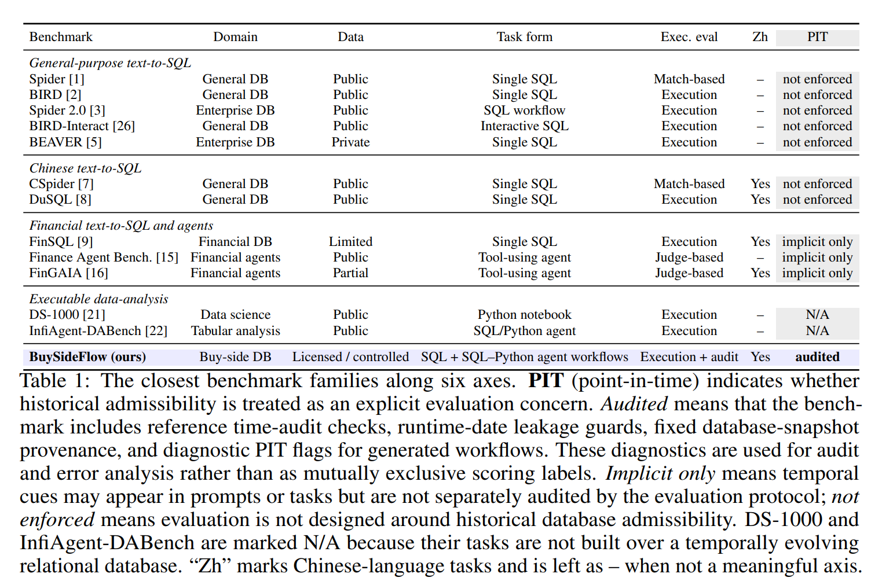

BuySideFlow: A Point-in-Time Benchmark for LLM Agents in Investment Research
Evaluating executable SQL and SQL–Python agents under point-in-time constraints, licensed financial database snapshots, and strict output contracts.
Abstract
Buy-side investment research is not just “write SQL and run it.” A workflow can execute successfully and still be wrong: it may pull a filing that was not yet public at the research date, rely on a classification revised after the fact, or apply today's security list to a date when it looked different. BuySideFlow is a benchmark of 408 practitioner-derived tasks spanning equities, funds, fixed income, and macroeconomics. Every task runs against the same fixed sample snapshot of a licensed financial database, with 110 tables and 4,547 columns. Reference workflows comprise 254 SQL-native tasks and 154 SQL–Python tasks. Nine agent configurations are evaluated on all 408 tasks. Full-match result accuracy ranges from 16.2% to 36.8%. Among 380 audited submissions that pass the result check, 193 (50.8%) still contain confirmed point-in-time violations, so output agreement alone does not establish temporal validity.
Benchmark Highlights
Point-in-Time Correctness
Tasks require agents to respect research dates, disclosure dates, effective intervals, classification vintages, and historical security universes.
Executable Workflows
Submissions are evaluated by execution under strict output contracts, rather than by generated text alone.
Controlled Financial Data
The benchmark runs against a fixed licensed financial database snapshot with end-to-end hashing for auditability.
Task Distribution
| Domain | Equity | Fund | Fixed income | Macro | Total |
|---|---|---|---|---|---|
| Tasks | 166 | 125 | 93 | 24 | 408 |
Domain counts from the paper. Reference workflows split into 254 SQL-native tasks and 154 SQL–Python tasks.
Comparison with Existing Benchmarks
BuySideFlow differs from existing text-to-SQL, financial-agent, and executable-analysis benchmarks by treating point-in-time admissibility as an explicit evaluation concern.

Table 2: Closest benchmark families along six axes. PIT indicates whether historical admissibility is treated as an explicit evaluation concern.
Evaluation Protocol
Execution + Audit
Generated SQL and Python workflows are executed and checked against reference artifacts. Diagnostic flags surface point-in-time risks.
Runtime Leakage Guards
Runtime date functions such as current-date calls are blocked to prevent hidden time leakage.
Output Contracts
Outputs must satisfy task-specific requirements on schema, ordering, units, rounding, and artifact type.
Leaderboard
Full-match result accuracy on all 408 tasks. Each row is one paper baseline: the agent scaffold paired with the model. Overall is the percentage of tasks whose executed artifact matches the reference. The other columns split that accuracy by asset domain and by reference workflow.
Rows are loaded from data/leaderboard.json and ranked by overall accuracy.
Click a column heading to sort. Highlighted cells are column maxima.
These rows are the paper baselines, not external submissions.
Loading leaderboard…
Result accuracy (%) overall, by asset domain (166 / 125 / 93 / 24), and by reference workflow (254 / 154). Overall pools all 408 tasks.